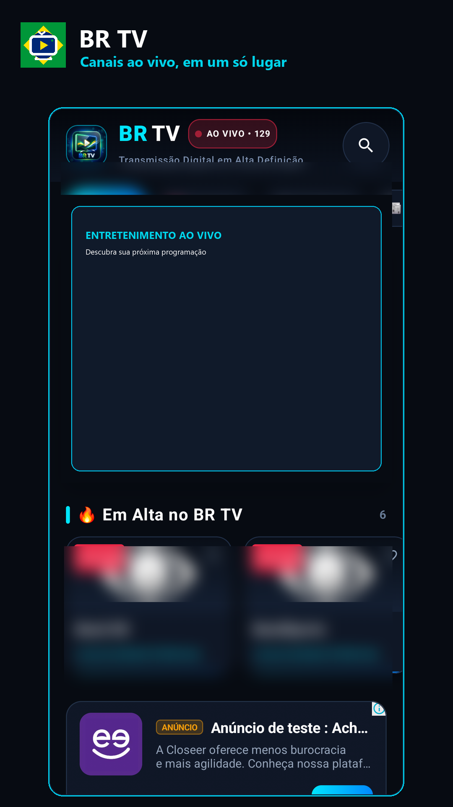
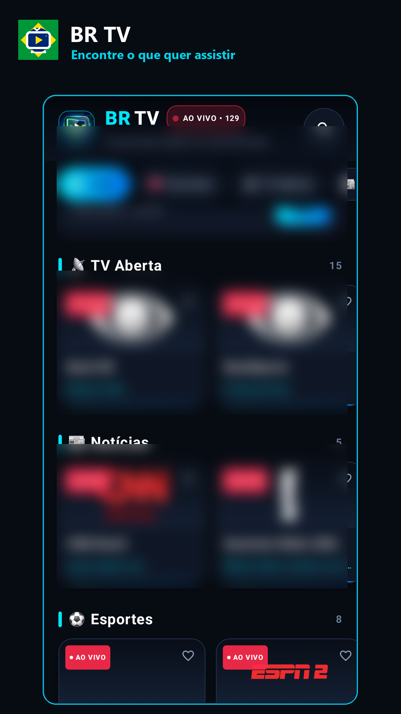
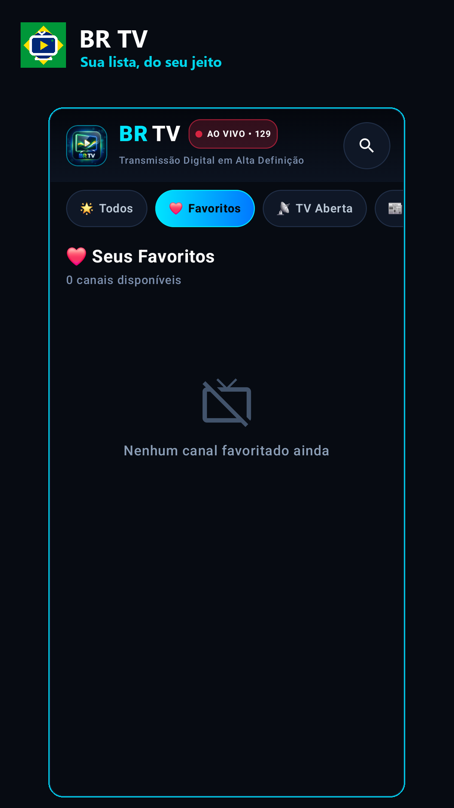
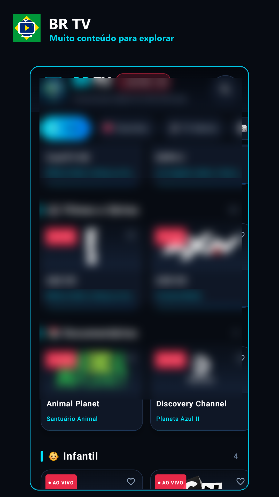
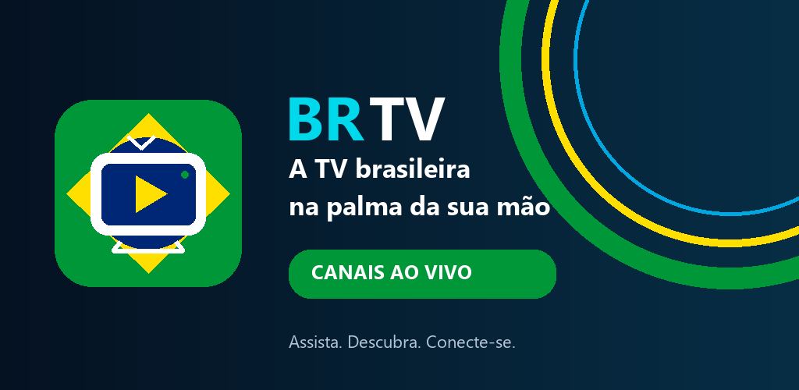

Pesquise canais e programas pelo nome e encontre resultados no catálogo disponível.
Entretenimento para Android
Seu próximo programa, mais fácil de encontrar.
Encontre canais e programas, explore categorias, salve favoritos e assista no celular ou em dispositivos compatíveis.
Busca por canal e programaFavoritos no dispositivoGoogle Cast compatível
FEITO PARA DESCOBRIR
Recursos do BR TV
Uma interface direta para procurar conteúdo, organizar sua lista e iniciar a reprodução.
Navegue por seções e veja sugestões destacadas na tela inicial.
Marque canais para acessá-los com mais facilidade. A seleção fica salva localmente no dispositivo.
Consulte o programa atual e o próximo quando esses dados estiverem disponíveis.
Use o player integrado e, quando houver um dispositivo compatível, transmita pelo Google Cast.
Atualize o catálogo pela tela inicial. A disponibilidade dos links depende das fontes externas.
CONHEÇA A INTERFACE
Uma tela para cada jeito de assistir
Capturas do app em uso, com logotipos de canais desfocados.




As capturas mostram a interface real. A disponibilidade de canais, links e dados de programação pode mudar conforme as fontes externas.
BR TV GRATIS
Programação ao vivo na palma da mão
Instale o BR TV e explore os recursos disponíveis no seu dispositivo Android.

Como o conteúdo funciona
O BR TV é um catálogo e reprodutor: ele consulta links e informações de programação fornecidos por fontes externas e não hospeda os vídeos. A reprodução depende da disponibilidade dos links, da conexão e das condições dos serviços de terceiros.
Use o app somente para acessar conteúdo que você tem autorização para assistir. Para dúvidas ou solicitações relacionadas a conteúdo, fale com o desenvolvedor pelo e-mail abaixo.
Informações do aplicativo
- NomeBR TV Gratis
- PlataformaAndroid
- Pacotecom.ciclo21.app
- DesenvolvedorJackson Silva
- ContatoE-mail de suporte
O aplicativo contém publicidade. Veja como os dados são tratados na Política de Privacidade.